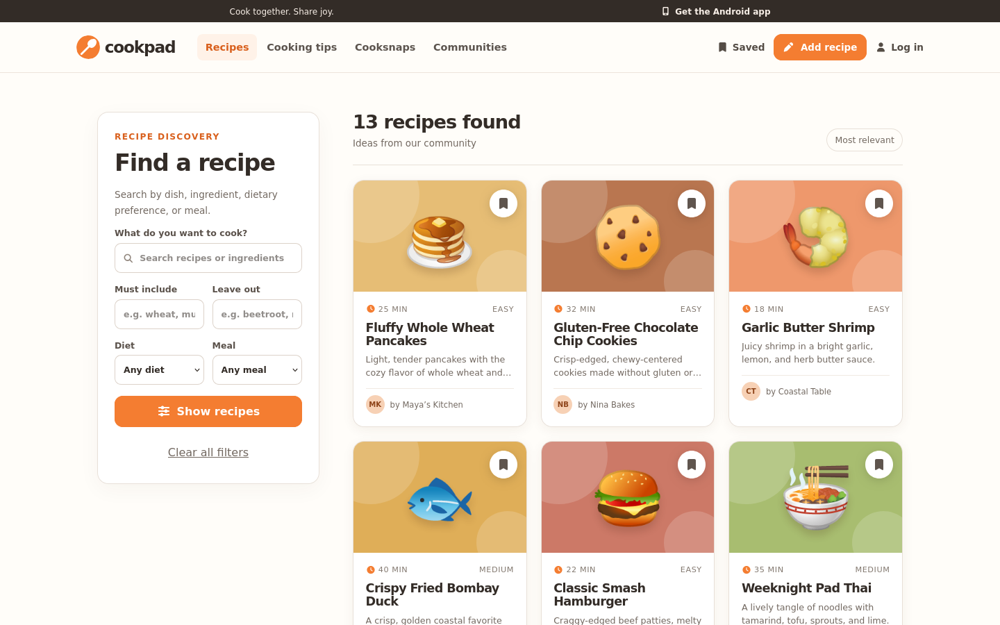

REAL COUNTEREXAMPLE · AP-NAV-05
Tab moves. Focus does not.
On Cookpad, pressing Tab on Recipes briefly removes focus and returns it to the same link. The keyboard user makes no navigation progress.
COOKPAD/searchCONTROLLED GENUI
one trusted forward-Tab transaction
Tab
handler
check
SAME WEBSITE · SAME ROUTEs0 · Start on Recipes

EXPECTED · Cooking tips
The screenshot is captured from the injected Cookpad GenUI build used for AP-NAV-05. Focus boxes are presentation overlays derived from the injected blur(); focus(); sequence and the checker verdict.